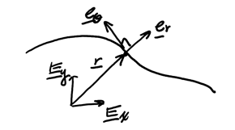
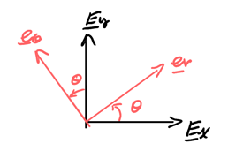
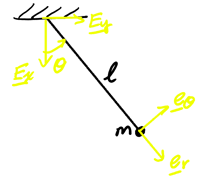
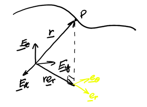
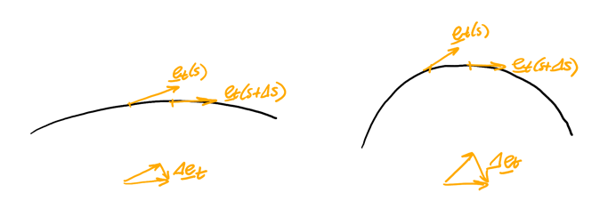
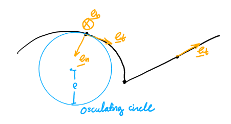

Particle Kinematics
Table of Contents
1. Rectilinear Motion
Rectilinear motion is motion along a straight line. Take \(\mathbf{E}_x\) to be along the particle’s line of motion. Then,
\begin{align} \mathbf{r} &= x\mathbf{E}_x + y\mathbf{E}_y + z\mathbf{E}_z \notag \\ \mathbf{v} &= \dot{x}\mathbf{E}_x \notag \\ \mathbf{a} &= \ddot{x}\mathbf{E}_x \notag \end{align}If \(s\) is arc length, then \(\dot{s}\) and \(\dot{x}\) may not always be the same: they are only the same if the particle’s trajectory direction \(\mathbf{e}_x = \mathbf{E}_x\). Assuming that this is the case, we have:
\begin{align} \mathbf{a} &= \frac{\text{d}v}{\text{d}s}\frac{\text{d}s}{\text{d}t} \notag \\ a\mathbf{E}_x &= \frac{\text{d}v}{\text{d}s}v\mathbf{E}_x \notag \end{align}Projecting this equation along \(\mathbf{E}_x\) to turn it into a scalar equation, we have:
\begin{align} \boxed{a\text{ d}s = v\text{ d}v} \end{align}2. Polar Basis
Consider a particle moving in the plane like so:

Then, the position vector is \(\mathbf{r} = x\mathbf{E}_x + y\mathbf{E}_y\). Define \(r=\|\mathbf{r}\| = \sqrt{x^2+y^2}\) and an angle \(\theta\) such that \(\tan \theta = \frac{y}{x}\).
Now, define \(\mathbf{e}_r = \frac{r}{\| r\|}\) as the unit vector in the direction of \(\mathbf{e}_r\), and \(\mathbf{e}_\theta\) as the unit vector orthogonal to \(\mathbf{e}_r\). However, since there are two choices for the direction of \(\mathbf{e}_\theta\), we choose the one such that \(\mathbf{e}_r \times \mathbf{e}_\theta = \mathbf{E}_x \times \mathbf{E}_y\). \(\mathbf{e}_\theta\) then points in the direction of increasing \(\theta\). Then, the polar basis \(\{\mathbf{e}_r, \mathbf{e}_\theta\}\) is a rotation of \(\{\mathbf{E}_x,\mathbf{E}_y\}\) by \(\theta\):

Using trigonometry, we can convert between the Cartesian basis and the polar basis:
\begin{align} \mathbf{e}_r &= \cos\theta\mathbf{E}_x + \sin\theta\mathbf{E}_y \\ \mathbf{e}_\theta &= -\sin\theta\mathbf{E}_x + \cos\theta\mathbf{E}_y \end{align}Taking derivatives of the polar basis vectors, we find that:
\begin{align} \dot{\mathbf{e}}_r &= \dot{\theta}\left(-\sin\theta\mathbf{E}_x + \cos\theta\mathbf{E}_y\right) = \dot{\theta}\mathbf{e}_\theta \notag \\ \dot{\mathbf{e}}_\theta &= -\dot{\theta}\left(\cos\theta\mathbf{E}_x + \sin\theta\mathbf{E}_y\right) = -\dot{\theta}\mathbf{e}_r \notag \end{align}Then, we can use these derivatives to derive the position, velocity, and acceleration equations in the polar basis:
\begin{align} \mathbf{r} &= r\mathbf{e}_r \\ \mathbf{v} &= \dot{r}\mathbf{e}_r + r\dot{\theta}\mathbf{e}_\theta \\ \mathbf{a} &= \big(\underbrace{\ddot{r}}_{\text{radial}} - \underbrace{r\dot{\theta}^2}_{\text{centripetal}}\big)\mathbf{e}_r + \big(\underbrace{2\dot{r}\dot{\theta}}_{\text{Coriolis}} + \underbrace{r\ddot{\theta}}_{\text{tangential}}\big)\mathbf{e}_\theta \end{align}The following gives a rough intuition for the different components of the acceleration \(\mathbf{a}\):
- Radial: \(\mathbf{a} = \ddot{r}\mathbf{e}_r\) happens when both \(\dot{\theta}\) and \(\ddot{\theta}\) are zero, so when a particle’s trajectory is purely linearly (rectilinear motion).
- Centripetal: \(\mathbf{a} = -r\dot{\theta}^2\mathbf{e}_r\) happens when \(\dot{r}, \dot{\theta}, r\) are all constant, so when a particle is tracing a circle at constant speed.
- Tangential: \(\mathbf{a} = r\ddot{\theta}\mathbf{e}_\theta\) occurs only when \(\dot{\theta}=0\), but then \(\ddot{\theta}=0\), so it is impossible. At minimum, we must also have centripetal acceleration.
- Coriolis: \(\mathbf{a} = 2\dot{r}\dot{\theta}\mathbf{e}_\theta\) is impossible, at minimum we also need centripetal acceleration. This occurs in a “rotating frame of reference.”
Example: Simple pendulum
A particle of mass \(m\) is suspended by an inextensible massless string. Find the differential equation representing the equation of motion of the particle:

We use the polar basis \(\{\mathbf{e}_r, \mathbf{e}_\theta\}\):
\begin{align} \mathbf{r} &= l\mathbf{e}_r \notag \\ \mathbf{v} &= l\dot{\theta}\mathbf{e}_\theta \notag \\ \mathbf{a} &= -l\dot{\theta}^2\mathbf{e}_r + l\ddot{\theta}\mathbf{e}_\theta \notag \end{align}We have two forces acting on the mass, the weight and the tension force:
\begin{align} \mathbf{W} &= mg\mathbf{E}_x \notag \\ \mathbf{T} &= -T\mathbf{e}_r \notag \end{align}Using the balance of linear momentum, we get:
\begin{align} -T\mathbf{e}_r + mg\mathbf{E}_x = m(-l\dot{\theta}^2\mathbf{e}_r + l\ddot{\theta}\mathbf{e}_\theta) \notag \end{align}We can get rid of \(T\) by projecting along \(\mathbf{e}_\theta\):
\begin{align} -g\sin\theta = l\ddot{\theta} \notag \end{align}Therefore, our differential equation is:
\begin{align} \boxed{\ddot{\theta} + \frac{g}{l}\sin\theta = 0} \notag \end{align}2.1. Cylindrical Polar Basis
We can extend the idea of the polar basis to three dimensions by using \(\mathbf{E}_z\) to represent height:

Note that \(\mathbf{e}_r\) no longer points along \(\mathbf{r}\)! Then, our position, velocity, and acceleration vectors are the same as the polar ones, but with derivatives of \(z\mathbf{E}_z\):
\begin{align} \mathbf{r} &= r\mathbf{e}_r + z\mathbf{E}_z \\ \mathbf{v} &= \dot{r}\mathbf{e}_r + r\dot{\theta}\mathbf{e}_\theta + \dot{z}\mathbf{E}_z \\ \mathbf{a} &= (\ddot{r} -r\dot{\theta}^2)\mathbf{e}_r + (2\dot{r}\dot{\theta} + r\ddot{\theta})\mathbf{e}_\theta + \ddot{z}\mathbf{E}_z \end{align}3. Frenet-Serret Basis
The Frenet-Serret basis is a moving, right-handed orthonormal basis attached to a particle on a 3D curve. Consider a particle tracing a path. Recall that arc length \(s\) is defined as \(\frac{\text{d}s}{\text{d}t} = \| \frac{\text{d}\mathbf{r}}{\text{d}t}\|\). Then, we can write velocity as:
\begin{align} \mathbf{v} = \frac{\text{d}\mathbf{r}}{\text{d}t} = \frac{\text{d}\hat{\mathbf{r}}}{\text{d}s}\frac{\text{d}s}{\text{d}t} = v\frac{\text{d}\hat{\mathbf{r}}}{\text{d}s} \notag \end{align}where \(\hat{\mathbf{r}}\) denotes \(\mathbf{r}\) expressed in terms of arc length \(s\) instead. Now, realize that the change in position vector \(\mathbf{r}\) with respect to change in \(s\) is a vector that is tangent to the trajectory of the particle. In other words, \(\frac{\text{d}\hat{\mathbf{r}}}{\text{d}s}\) is the unit tangent vector, denoted as \(\mathbf{e}_t\):
\begin{align} \mathbf{v} = v\mathbf{e}_t \end{align}Now, to determine acceleration:
\begin{align} \mathbf{a} &= \dot{\mathbf{v}} = \dot{v}\mathbf{e}_t + v\dot{\mathbf{e}}_t \notag \\ \dot{\mathbf{e}}_t &= \frac{\text{d}\hat{\mathbf{e}}_t}{\text{d}s}\frac{\text{d}s}{\text{d}t} = v\frac{\text{d}\hat{\mathbf{e}}_t}{\text{d}s} \notag \end{align}The question is, what is the magnitude and direction of \(\frac{\text{d}\hat{\mathbf{e}}_t}{\text{d}s}\)? To find direction, we can make the following derivation:
\begin{align} &\mathbf{e}_t \cdot \mathbf{e}_t = 1 \notag \\ \Rightarrow&\frac{\text{d}}{\text{d}s}(\mathbf{e}_t \cdot \mathbf{e}_t) = \frac{\text{d}}{\text{d}s}(1) \notag \\ \Rightarrow&\frac{\text{d}\mathbf{e}_t}{\text{d}s}\cdot\mathbf{e}_t + \mathbf{e}_t\cdot\frac{\text{d}\mathbf{e}_t}{\text{d}s} = 0 \notag \\ \Rightarrow&\frac{\text{d}\mathbf{e}_t}{\text{d}s}\cdot\mathbf{e}_t = 0 \notag \\ \Rightarrow&\mathbf{e}_t\perp \frac{\text{d}\mathbf{e}_t}{\text{d}s} \notag \end{align}Now we know the direction: it is perpendicular to \(\mathbf{e}_t\). Now, consider the magnitude:

The magnitude appears to depend on how “curved” the trajectory is, the curvature \(\kappa\):
\begin{align} \frac{\text{d}\mathbf{e}_t}{\text{d}s} = \kappa \mathbf{e}_n \notag \end{align}where \(\mathbf{e}_n\) is the unit normal vector such that \(\mathbf{e}_n \cdot \mathbf{e}_t = 0\). Thus, acceleration is:
\begin{align} \mathbf{a} = \dot{v}\mathbf{e}_t + \kappa v^2 \mathbf{e}_n \end{align}Then, to complete the orthonormal basis, we define the unit binomial to be \(\mathbf{e}_b = \mathbf{e}_t \times \mathbf{e}_n\). This completes the Frenet-Serret basis \(\{\mathbf{e}_t, \mathbf{e}_n, \mathbf{e}_b\}\):

\(\mathbf{e}_n\) always points towards the center of curvature, where \(\rho\) is the radius of curvature and:
\begin{align} \kappa = \frac{1}{\rho} \end{align}For a straight line and at inflection points, \(\mathbf{e}_n\) is not uniquely defined. At the corner, \(\mathbf{e}_t\) is not well defined since \(\hat{\mathbf{r}}\) is not differentiable at that point.